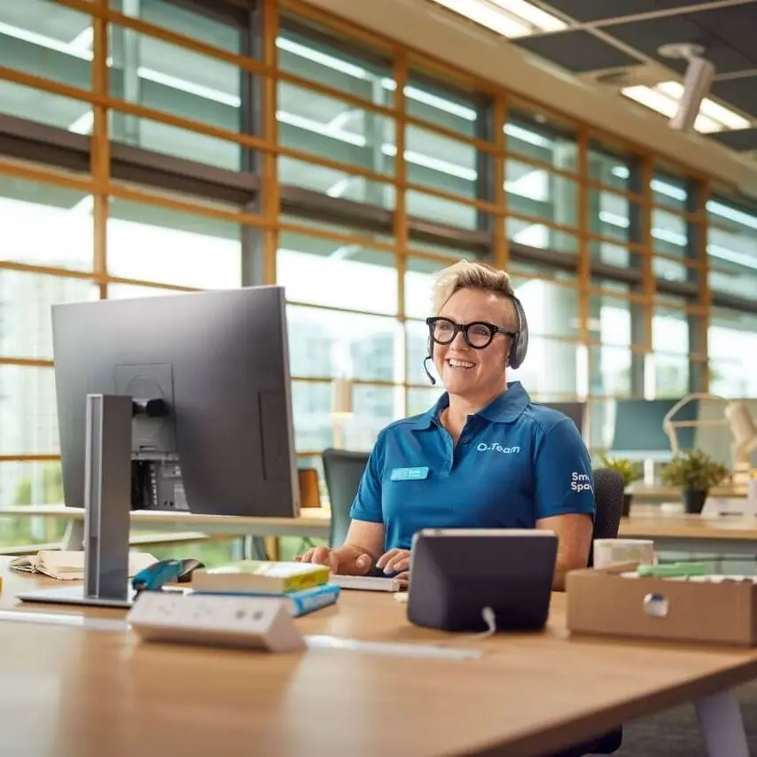
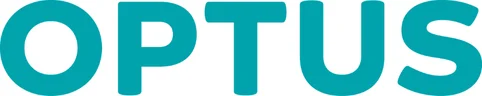
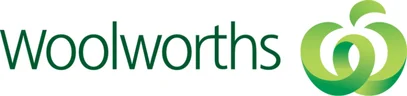
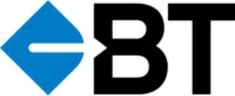
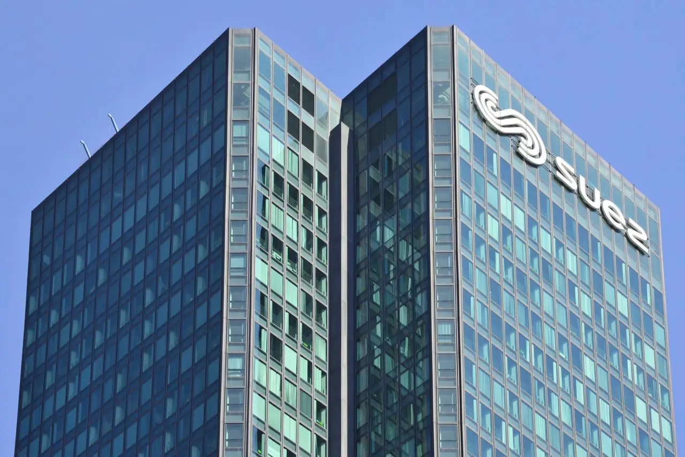
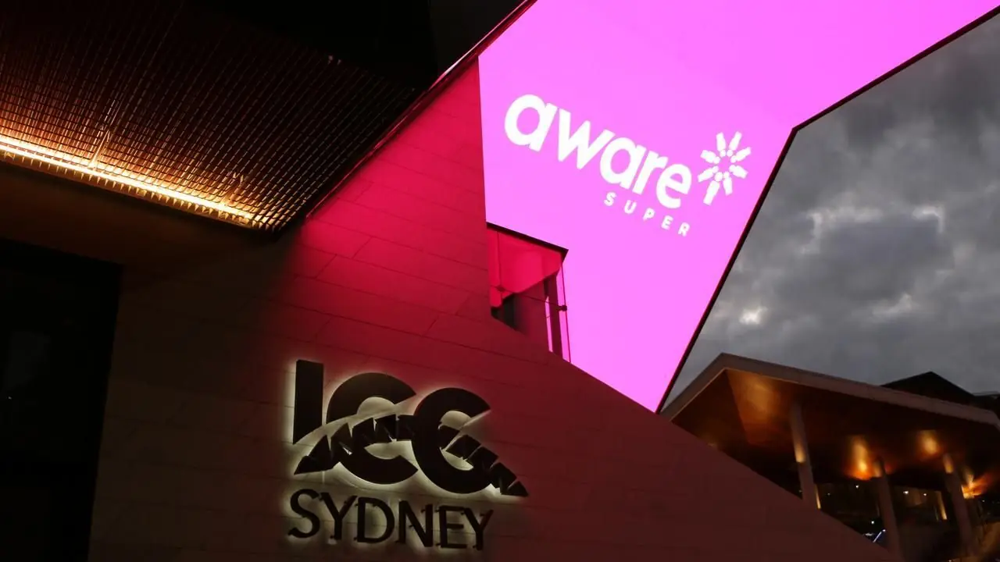

Optus Smart Spaces: implementing a fully digital customer experience for Australia's most-loved brand
Salesforce partner accountable for the end-to-end architecture and governance of Optus' new smart home products commerce platform.
Established in Sydney in 2013, Infotech is an Australian-headquartered technology consulting and services company with a dedicated Offshore Delivery Centre in Hyderabad, India. With 150+ skilled technology professionals, we partner with enterprises to strengthen their engineering capabilities, accelerate digital transformation, and optimise technology delivery through a combination of local accountability and scalable offshore expertise.
Organisations we work with



Six practices covering the enterprise technology stack, delivered through one accountable partner.
We offer Dedicated Offshore Delivery Centres (ODCs), Managed Services, Turnkey Programs, Staff Augmentation and Build-Operate-Transfer (BOT) arrangements, structured around each client's operational priorities, governance requirements and commercial objectives.
Compare delivery modelsOur value proposition extends beyond access to technology talent. We bring together specialised engineering expertise, disciplined delivery governance, workforce stability and commercial flexibility.
Practitioners across Salesforce & MuleSoft, cloud, data and AI, quality engineering, digital engineering and enterprise applications.
Formal methodology, steering cadences, transparent reporting and documented change control on every engagement.
Less than 3% attrition, structured knowledge management and shadow-resourcing practices that protect continuity.
ODCs, managed services, turnkey programs, staff augmentation and BOT, structured around your priorities and commercial objectives.
With less than 3% attrition, structured knowledge management and shadow-resourcing practices, we prioritise continuity, accountability and reduced delivery risk. Our blended onshore–offshore model enables organisations to scale technology capabilities while maintaining quality, cost efficiency and predictable outcomes.

Salesforce partner accountable for the end-to-end architecture and governance of Optus' new smart home products commerce platform.
Automated assignment, lead scoring, dedupe rules and nurture journeys for Optus small business.

Integrated 75 newly acquired offices and their applications into Veolia's network and AWS cloud datacenter.
Replacing siloed compute, storage and networking with a unified, cloud-ready Nutanix HCI platform.
A Salesforce partner portal for agents and policyholders covering sales tracking, policy data and service requests.

AI-driven marketing automation, analytics and ESG transparency for an Australian profit-for-member super fund.
Client engagement and delivery leadership in Australia, combined with engineering scale from our dedicated Offshore Delivery Centre in Hyderabad, working as one team under one governance framework.
How we deliverClient engagement, solution architecture and delivery leadership from our Australian headquarters, close to your stakeholders.
Engineering, testing and support capacity from our dedicated Offshore Delivery Centre in Hyderabad, giving you scale and cost efficiency.
Hyderabad's working day overlaps with Australian business hours, enabling same-day collaboration and extended coverage.
A single engagement owner, shared delivery cadence, transparent reporting and consistent quality and security standards.
Work with leading organisations on enterprise programs across Australia and India, in a team that values stability, learning and long-term growth.
Explore opportunitiesTell us about your goals. Our team in Australia and India will get back to you to discuss how we can help.